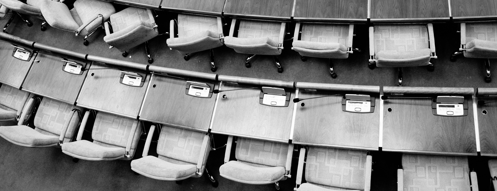

Nurses and their Struggles
In March of 2023, the International Council of Nurses (ICN) released a report that called out a worldwide shortage of nurses in the medical field that could lead to a global health emergency. This was caused by the pandemic which greatly affected the nursing profession by increasing burnout and reducing access to care. The pandemic combined with the lack of staffing increased the stress of workers and drastically decreased their satisfaction leading many to leave the profession propagating the understaffing issue. In October 2023, more than a quarter of all nurses had plans to leave the profession. It was observed that nurses employed in this setting had the lowest levels of job satisfaction. It doesn't help that in this century most of the established Nurses in the United States are nearing their retirement as well. According to the National Sample Survey of Registered Nurses in 2022, 23% of Registered Nurses planned to retire in the next 5 years.
In April 2022, a nursing workforce analysis was conducted in health affairs that from 2020 to 2021 had a 100,000 decrease in Registered Nurses, the biggest drop in the past four decades. According to a Health Workforce Analysis by the HRSA (Health Resources and Services Administration) in November 2022,there was a projected shortage of ~79,000 full-time Registered Nurses by 2025 and ~64,000 full-time Registered Nurses by 2030. The Bureau also projects ~193,000 openings for Registered Nurses each year until 2032.
The system is not helping with mitigating these problems at the moment as in 2022 in a Nurse Salary Research Report, 29% of nurses across all license types are considering leaving in 2021, compared with 11% in 2020. The biggest reason that stopped them from leaving was the higher pay.
The issues these nurses pointed out as a problem were:
- lack of support
- No work-life balance
- Unreasonable workload
The ten states with the largest projected nursing shortage in 2035 are:

The Bottleneck of the Nursing Industry
When we look at the vacant Nursing positions compared to the students enrolled in Nursing school enrollment we will see that the the projected graduating nurses will not meet the demands for Registered Nurses and Advance Practice Registered Nurses. In 2023 there was a reported from of 3.1% for Nurses pursing their PhD and 0.9% for nurses pursing their Masters. These trends raise major concerns on nursing schools and their ability to meet the projected demand for students as they lack the open capcity for nurse and research faculty. According to reports from 2023 to 2024 for enrollment and graduation it was estimated that ~66,000 of qualified applications were turned away from nursing programs due to:
- Insufficient number of faculty members
- Lack of clinical sites to train at
- Lack of classroom space
- Shortage of Clinical Preceptors
- Lack of funds
The Implosion of this Industry
As the years have progressed the number of Nurses in the field the profession is experiencing an unprecedented exodus. From 2020 to 2021, the nursing workforce decreased by more than 100,000—the largest drop observed in four decades. Alarmingly, a significant portion of those leaving were under age 35 and worked in hospitals.
According to research published in October 2023 by the American Medical Association, more than one in four U.S. nurses now plan to leave the profession. This represents a dramatic increase from 11% considering leaving in 2020 to 29% in 2021. The nursing workforce is also aging rapidly, with 23% of Registered Nurses in outpatient settings planning to retire within five years.
Why are nurses leaving? The primary factors include:
- Insufficient staffing creating unsustainable workloads
- Lack of work-life balance
- Inadequate support systems
- Burnout intensified by pandemic conditions
- Insufficient compensation relative to stress and responsibilities
Importantly, among nurses considering leaving, higher pay was cited as the most influential factor that might convince them to stay, followed by better support for work-life balance and more reasonable workloads.
Addressing this crisis requires immediate, coordinated action across healthcare systems, educational institutions, and policy makers. Without intervention, the gap between nursing supply and healthcare demand will continue to grow, compromising patient care and further straining those remaining in the profession.

The Toll on the Elderly
Elder abuse in nursing homes represents a significant concern while being overlooked by the masses. This Abuse increased exponentially during the COVID-19 pandemic. Many Care Managers in the field lack awareness of elder abuse, which negatively impacts resident well-being and the overall safety in nursing homes. This problem is becoming increasingly significant as the American elderly population grows, with Census Bureau projections showing an increase to 82 million by 2050.
As people grow older we begin to experience a cognative decline where through a reduced blood flow, shrinking brain regions, slower neural communication, and fewer opportunities for mental engagement we lose our mental capacity. This along with poor nutrition, dehydration, and lack of exercise due to neglect can makes the elderly the most susceptible group for others to exploit.
The Abuse Endured
Abuse from Co-residents
A now normal part of nursing-home Life that represents the most common daily challenge in nursing homes. This form of abuse often stems from residents with cognitive impairments like dementia.
Types of abuse include:
- Psychological (threats and privacy violations through trespassing)
- Sexual (unwanted sexual advances, typically from cognitively impaired residents)
- Physical (aggressive and bullying behaviors)
Abuse from Relatives
These altercations usually occur behind closed doors and are often connected to long-standing family conflicts that continue in the nursing home setting.
Types of abuse include:
- Physical (hitting, force feeding, other aggression)
- Financial (theft, unauthorized use of funds, coercion)
- Neglect (making decisions against residents' wishes, refusing necessary purchases)
Abuse from Staff
Many often considered it unthinkable that staff hurt the elderly as managers need to that their employees do whats in the patients best interest for the system to work. In nursing homes and long-term care facilities, 2 in 3 staff report having committed abuse in the past year.
Types of abuse include:
- Physical (improper use of restraints, rough handling during care)
- Psychological (yelling, rude behavior, violating privacy by discussing issues publicly)
- Financial (stealing money)
- Sexual (often dismissed as hallucinations when reported by residents with dementia)
- Neglect (doing things for residents to save time, ignoring wishes, not providing needed care)

The Problem with the system
Care Manager's perspective on the matter can be skewed due to years of these abusive behaviors becoming normalized and can just be seen as a "foreseeable risks" of nursing home life. Staff also often redirect the focus of discussions to resident-to-staff than addressing the root of the problem. by not addressing the problems directly they lack the means and knowledge to handle these matter that would help residents and the staff.
Many nursing homes are understaffed, leading to inadequate care leading to resources redirected causeing a lot of non-medical tasks to being pushed to the side. While the press looks for theft which is prevented by mutliple policies they do not stop to look into the otehr forms of abuse.
Approximately 1 in 6 people 60+ years experienced some form of abuse in community settings during the past year. all of these lack of changes creates a lonely and emotionally charged environment where they feel:
- Isolated from strict visitation schedules
- Out of control due to loss of autonomy
- Anxious from unfamiliar surroundings and people
- Lonely due to cognitive decline/mobility issues being a barrier to creating relationships
- Grief from seeing others pass away

The Changes we Need
- Strengthen Staffing Qualifications
- The U.S. Department of Health & Human Services has now issued a rule that requires nursing homes to participate in Medicare/Medicaid to provide at least 3.5 hours of direct nursing care per resident per day. This includes around‑the‑clock coverage with Registered Nurse. This is to ensure sufficient care is given and aims to reducing neglect and improper use of medicine.
- Improve Training of Nurses
- Under the Nursing Home Reform Act, facilities with compliance violations lose the ability to run nursing programs. This is a push to tighten and modernize training standards nationwide to ensure nurses will recognize and report abuse.
- Federal Oversight and Enforcement
- The Centers for Medicare & Medicaid Services (CMS) is partnering with resident advocates and industry groups to enforce financial transparency and higher staffing levels. This will boost funding incentives for recruitment into long‑term care.
- The U.S. Department of Health & Human Services has now issued a rule that requires nursing homes to participate in Medicare/Medicaid to provide at least 3.5 hours of direct nursing care per resident per day. This includes around‑the‑clock coverage with Registered Nurse. This is to ensure sufficient care is given and aims to reducing neglect and improper use of medicine.
- Under the Nursing Home Reform Act, facilities with compliance violations lose the ability to run nursing programs. This is a push to tighten and modernize training standards nationwide to ensure nurses will recognize and report abuse.
- The Centers for Medicare & Medicaid Services (CMS) is partnering with resident advocates and industry groups to enforce financial transparency and higher staffing levels. This will boost funding incentives for recruitment into long‑term care.